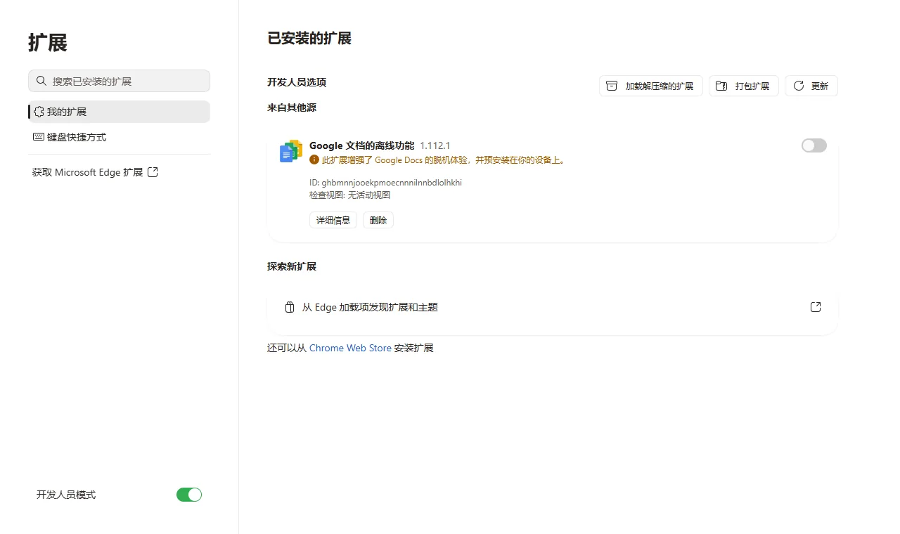

IEEE
已实测用 ScholarOne Manuscripts 或 IEEE Author Portal 投稿的 IEEE 期刊，填一次账号即可自动登录查询。
TPAMI人工智能TNNLS机器学习TII工业信息TMI医学影像TPWRS电力系统T-ASE自动化
IEEE TAC、RA-L 等用 PaperCept 投稿的期刊暂不包括。
按投稿系统支持，同一系统上的期刊都能用。哪些已经用真实稿件实测过，下面分开标明。
用 ScholarOne Manuscripts 或 IEEE Author Portal 投稿的 IEEE 期刊，填一次账号即可自动登录查询。
IEEE TAC、RA-L 等用 PaperCept 投稿的期刊暂不包括。
凭投稿确认邮件里的「Track your submission」链接查询，不需要登录；在追踪页上点一下扩展图标就能添加。
已用 Elsevier 官方示例稿件测试通过，还没有用真实在审稿件验证。
Nature 系列（如 Nature Medicine）、Springer 期刊：在投稿系统的稿件列表页点扩展图标添加。
Automatica、IFAC 世界大会等 IFAC 期刊和会议。
中国控制与决策会议、中国控制会议等 TCCT 会议。
Wiley、Taylor & Francis、The BMJ 等用 ScholarOne 的期刊，以及用表格列出稿件的其他投稿系统。
设置只做一次。之后它在后台定时查询，你只需要等通知。
下载后加载到 Edge 或 Chrome，约 1 分钟，不用注册账号。
在追踪面板里填一次账号，或者去投稿网站正常登录一次，扩展会自动记住。其他出版社的期刊，在稿件列表页点一下扩展图标即可添加。
稿件进入审稿、收到决定时弹出桌面通知。点工具栏图标，随时看全部进度。
每本期刊一张卡片，阶段用颜色区分：审稿中、需修改、接收一目了然。同一篇稿件不会重复出现。
状态变了才通知，第一次查询只记录。你正在投稿网站上操作时，它会自动避开，不会把你登出。
登录和查询都在后台完成，不用开着任何投稿网站。登录过期了会自己重新登录。
每篇稿件从投稿到决定的每一步都有记录，可以一键导出成 Markdown，整理投稿记录很方便。
没有服务器，没有注册，没有云同步。扩展只在你的浏览器和投稿网站之间工作。
照着下面 3 步做，大约 2 分钟。不需要懂电脑，每一步都配了图。
为什么要手动安装？mituan 投稿追踪还没有上架浏览器的扩展商店，所以需要自己装一次。装好后用起来和商店里的扩展一样。
360、QQ 等浏览器的扩展页面各不相同，下面按 Chrome 的界面说明，我们没有逐一测试。
manuscript-tracker.zip。装了 WinRAR、360 压缩、Bandizip 等软件的电脑，右键菜单里选「解压到 manuscript-tracker」也可以。Mac 上双击 zip 文件就会解压。
edge://extensions看不到这个开关？先把浏览器窗口最大化（双击窗口最上方的空白处）。窗口比较窄时，左边这一栏会收进页面左上角的 ☰ 按钮里。
这个开关的作用是允许安装扩展商店以外的扩展。装好以后请一直保持打开，关掉的话浏览器会停用这个扩展。

不小心双击进了这个文件夹也没关系，直接点「选择文件夹」就行。Mac 上选中文件夹后点右下角的确认按钮。

扩展页上出现「mituan 投稿追踪」，同时浏览器会自动打开一个写着「安装成功！」的页面，就说明装好了。在那个页面选择你投稿的期刊类型、连接账号，之后就不用再管它了。
建议把图标固定到工具栏：点浏览器右上角的拼图图标，在「mituan 投稿追踪」旁边点眼睛图标。以后点这个图标就能看到所有稿件。


说明选中的不是解压出来的文件夹。重新点「加载解压缩的扩展」，选 manuscript-tracker 文件夹：打开它应该能直接看到 manifest.json、background.js 这些文件。如果打开后里面还有一个 manuscript-tracker 文件夹，就选里面那个。
还没有解压。回到第 1 步，右键点 manuscript-tracker.zip，选「全部解压缩」，再点「提取」。
这是 Edge 对所有手动安装的扩展的例行提醒。请点「2 周后提醒」，不要点「关闭扩展」。如果已经点了：回到扩展页面，打开「开发人员模式」，再打开「mituan 投稿追踪」卡片右上角的开关，账号和记录都还在。
点浏览器右上角的拼图图标，在「mituan 投稿追踪」旁边点眼睛图标，图标就会一直显示在工具栏上。
先删除「下载」文件夹里旧的 manuscript-tracker.zip（只删 zip，不要删文件夹），再下载新版，同样右键「全部解压缩」→「提取」，提示有同名文件时选择替换。最后在扩展页面的「mituan 投稿追踪」卡片上点「重新加载」。账号和记录都会保留。
这个扩展目前只支持 Edge、Chrome 等 Chromium 内核的浏览器。Edge 和 Chrome 都是免费的，可以和 Firefox 同时安装，互不影响。
Safari 扩展必须打包成 Mac App 并通过 App Store 发布，暂时还没有上架计划。在 Mac 上可以使用 Edge 或 Chrome，安装方法完全相同。
完全免费，也不需要注册。代码公开在 GitHub，采用 PolyForm Noncommercial 1.0.0 许可：个人以及高校、科研机构等非商业用途可以免费使用和修改，不允许商业使用。
用真实稿件实测过的：IEEE 期刊的 ScholarOne Manuscripts 与 IEEE Author Portal、IFAC 的 PaperPlaza（Automatica 及 IFAC 会议）、TCCT 会议系统（CCDC、CCC 等）。Elsevier 的投稿追踪链接已用官方示例稿件测试通过，尚待真实稿件验证。其他投稿系统用通用识别，见下一条。
可以试试：登录投稿网站，打开列出你稿件的页面（例如 Editorial Manager 的「Submissions Being Processed」），点工具栏上的 mituan 图标，识别到稿件时会出现「追踪这些稿件」。这种通用识别不针对具体期刊，没有逐一实测，也不保存这些网站的密码；登录过期时，再打开一次那个页面就会恢复。用不了的话欢迎在 GitHub Issues 告诉我们是哪个系统。
账号只加密保存在你自己的浏览器里，只会发往对应投稿网站的登录地址，不经过任何服务器。本网站只提供下载，不收集任何数据。卸载扩展时账号会一并删除。
不用开着投稿网站，登录和查询都在后台完成。关掉所有浏览器窗口后，只要浏览器还在后台运行就会继续查询：Edge 默认如此；Chrome 需要在「设置 → 系统」里打开「关闭 Google Chrome 后继续运行后台应用」。彻底退出浏览器或关机时不会查询，下次打开浏览器时会马上补上。
这个扩展还没有上架扩展商店，浏览器只允许在开发人员模式下安装和运行商店以外的扩展，所以装好后也要保持这个开关打开。它只决定能不能使用商店以外的扩展，不会改动浏览器的其他设置。
有些登录页必须在真实页面里完成（例如 IEEE 账号页有防火墙）。扩展会在最小化窗口里自动登录，完成后自动关闭。遇到验证码时窗口会留着，并通知你处理。
你最近 10 分钟用过 IEEE 投稿网站，或者正停在那个页面上时，扩展会跳过这一轮，不打断你。
没有。油猴脚本只在你打开对应网页时运行，做不到关掉网页后的后台查询、自动登录和桌面通知，而这些正是它最有用的地方。安装扩展和安装油猴脚本一样简单。
在追踪面板的「设置」里点「复制诊断信息」，贴到 GitHub Issues。诊断信息不含账号、密码和稿件标题。